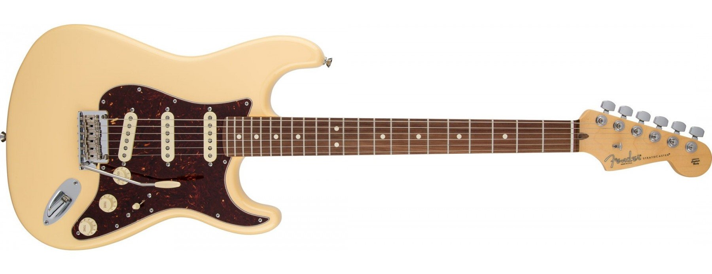

North Beach Guitars
Our Story
Here at North Beach Guitars, we believe that instruments should, above all else, provide inspiration for their player. If you can walk by your guitar without the insatiable urge to play it, we can guarentee it wasn't built here at our workshop in North Beach, Hampton NH. The look, feel, and playability of our instruments are second to none, and we invite you to see for yourself in shop.
It all started in 2005 when Erik and his dad built their first guitar together. Made with the finest swamp-ash in the Northeast, and embellished with real clam shell fretboard inlays harvested from North Beach, this was the blueprint for the look, feel and sound of our brand. Now, with over 15 years experience playing, fixing, and building guitars for his community, our founder Erik Martel personally inspects and play-tests each instrument before it is delivered to our valued customers.
Standard
Our standard guitars come in 3 body types and feature pre-selected tonewoods, colors, finishes, and hardware. The S-Standard is shown above.
Custom

Looking for the guitar of your dreams? Have an unconventional idea for your next axe? The possibilities are endless with a North Beach Custom. Choose from 5 different body styles, 3 neck options, unlimited color combinations, 2 finish options, and much more to create "the" guitar that will never fail to inspire you and future generations alike.
Hear from our clients
- Jackson Grove, Cincinatti OH
- Howy Ferdinand, Corona CA
- Dave Sax, Anchorage AK